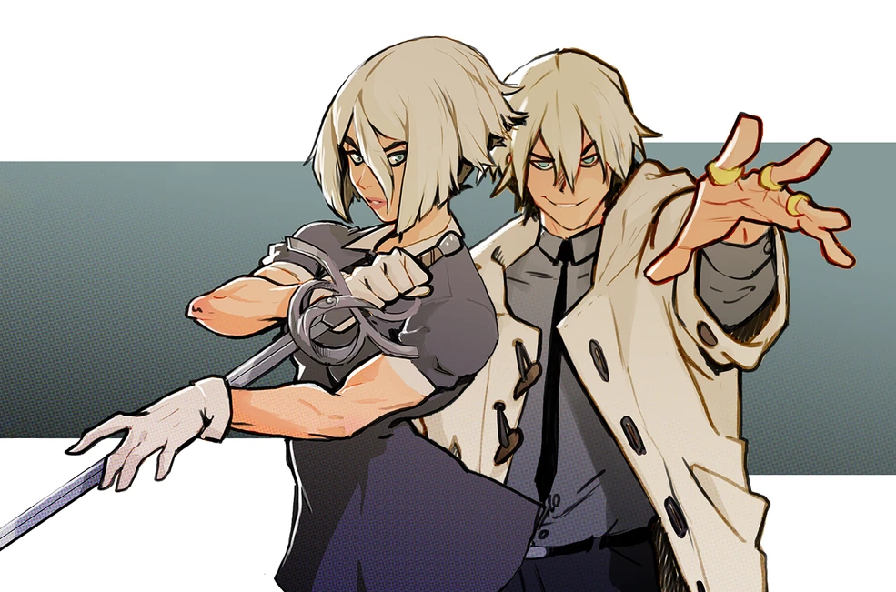
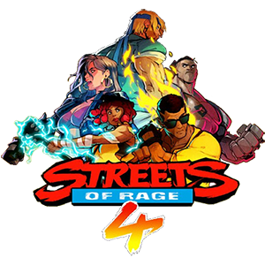
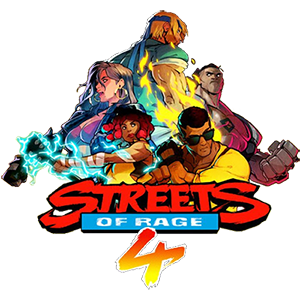

Vilões
Um novo sindicato do crime, liderado pelos gêmeos Y,
filhos de Mr. X (chefão da trilogia original) apareceu
e começou a tocar o terror, corrompendo até mesmo a polícia.

Mr Y ou Misutā Wai é um dos principais vilões de Streets of Rage 4 .
Ele é filho do Sr. X e da Mulher Sem Nome e irmão gêmeo da Sra.
Y , e um dos líderes do novo Sindicato Y.
Tal como o seu pai, ele é ambicioso, confiante,
astuto e sabe usar a sua vasta riqueza para
manipular os outros. No entanto, devido ser muito novo,
ele tende a ter acessos de raiva quando as
coisas não acontecem do seu jeito.

MS Y Misu Wai é um dos principais vilões de Streets of Rage 4 .
Ela é filha do Sr. X e da Mulher Sem N
Ao contrário da personalidade controlada do Sr. Y, a Sra.
Y é barulhenta, orgulhosa e arrogante, alegando sua
superioridade sobre os outros. No entanto, ela é fria e
letal em combate, com habilidades de esgrima incomparáveis.

 
